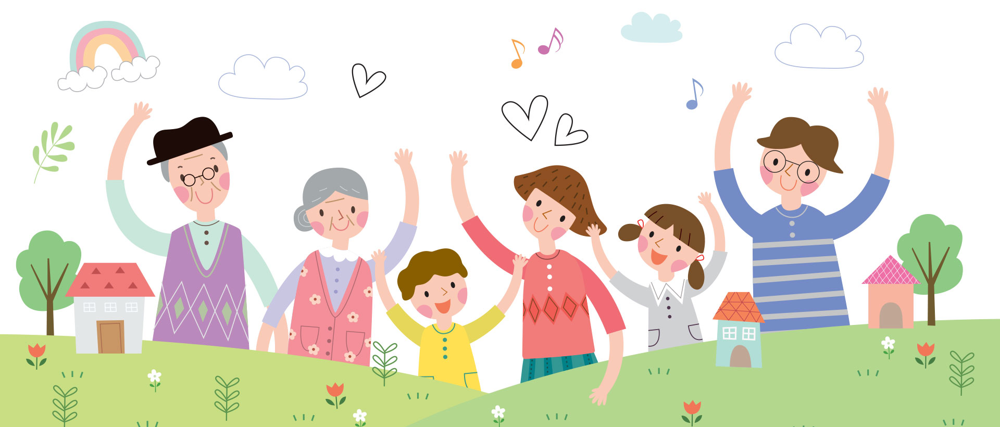

-

다소니 심리상담센터
당신의 소중한 관계를, 표현하기 어려운 감정들을, 다양한 고민과 스트레스를,
따뜻한 상담과 전문적인 검사로 치유할 수 있게 도와드리겠습니다. -

관계테라피
따뜻한 상담과 전문적인 검사로 치유할 수 있게 도와드리겠습니다. 타인과의 관계 속에서 지치고 상처받은 마음을
관계테라피를 통해 보살필 수 있습니다. -

청춘상담
따뜻한 상담과 전문적인 검사로 치유할 수 있게 도와드리겠습니다. 진로, 취업과 같은 현실적인 문제, 자존감, 정체성에 대한 문제, 내면의 문제처럼
혼자 해결하기 어려운 청춘들의 고민과 지친 마음을 들어드리고 도와드립니다.